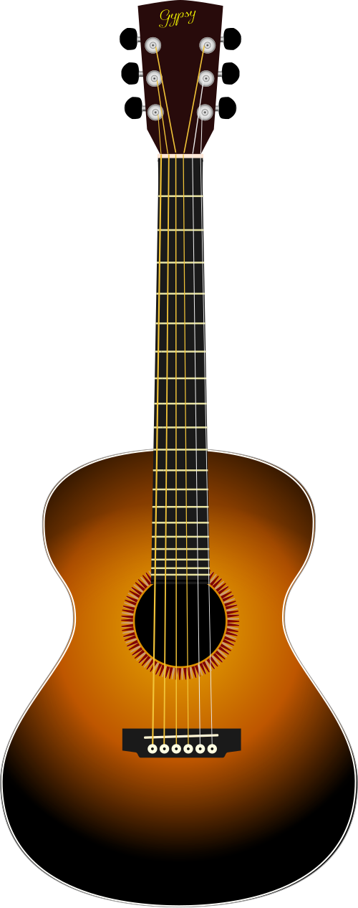

Berkenalan dengan gitarmu
Gitar akustik punya enam senar. Kita mulai dengan mengenali tempat tanganmu bekerja.

Pemutar senar
Tempat mengatur nada
Pemutar di kepala gitar mengubah ketegangan senar. Putar sedikit demi sedikit sambil memakai tuner; minta pendamping membantu saat pertama kali menyetem.
Posisi yang nyaman
- Duduk tegak dan rileks. Letakkan badan gitar di paha, jangan diangkat dengan bahu.
- Untuk pemain tangan kanan: tangan kiri menekan senar, tangan kanan memetik di dekat lubang suara.
- Tekan dengan ujung jari, dekat di belakang kawat fret, bukan tepat di atas kawatnya.
Kalau kamu kidal, minta guru membantu menyesuaikan posisi dan gitar. Diagram di sini memakai gitar standar tangan kanan.
Enam senar, enam nada
Senar 6 paling tebal, senar 1 paling tipis. Saat gitar dipegang, senar tebal berada lebih dekat ke wajahmu.
Dengar, lalu petik di gitarmu
Urutan tuning standar: E – A – D – G – B – E. Semua nada di atas dimainkan tanpa menekan fret.
Suara contoh berasal dari rekaman gitar akustik, bukan tuner. Untuk menyetem dengan tepat, gunakan tuner dan minta bantuan guru. Halaman ini tidak memakai mikrofon.
Petik satu per satu dari senar 6 ke 1.
Perhatikan: senar yang makin tipis terdengar makin tinggi. Tidak perlu menghafal semuanya hari ini.
Satu bentuk, beberapa nada
Chord adalah beberapa nada yang dimainkan bersama. Mulai dari Em: letakkan jari perlahan, lalu petik tiap senar untuk mendengar apakah bunyinya sudah jelas.
Em
Petik keenam senarJari 1 = telunjuk · 2 = tengah · 3 = manis · 4 = kelingking
Bunyi masih berdengung?
Geser ujung jari lebih dekat ke kawat fret, tanpa menutupi senar sebelahnya. Coba satu senar dulu; tekan secukupnya.
Jaga ketukan, bukan kecepatan
Pegang chord Em. Hitung “satu, dua, tiga, empat” dengan pelan. Satu putaran berisi empat ketukan.
Turun: sapukan dari senar tebal ke tipis.
Naik: sapukan kembali ke arah senar tebal.
Siap di ketukan 1.
Boleh latihan gerakan tangan dulu dengan senar diredam. Bila pindah chord terasa sulit, turunkan tempo.
Chord jadi satu latihan
Mainkan satu genjrengan turun pada tiap ketukan. Pindah chord setelah hitungan 4. Kalau terlambat, masuk lagi di ketukan berikutnya.
Birama 1 dari 4
Berikutnya: Am
Empat ketukan persiapan, lalu empat birama latihan.
Apa yang terasa lebih mudah hari ini?
Bunyi satu senar yang lebih jelas atau satu perpindahan chord yang lebih tenang juga kemajuan. Besok, coba bagian itu lagi.